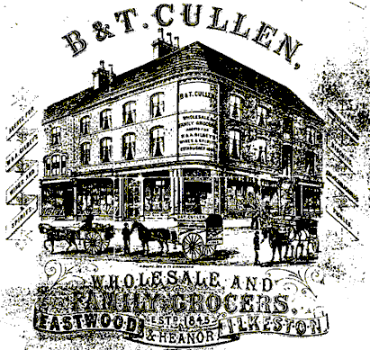
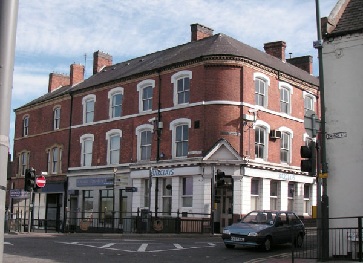

| Follow the above link to the main page for this topic or click the graphic below to visit the Homepage. |
 | Cullens of Eastwood, Nottinghamshire family history collections of Cliff Cullen and Dorothy Dowgray (Aukland, NZ) and David Cullen (Northampton, UK) |

